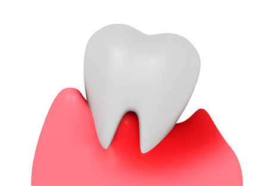
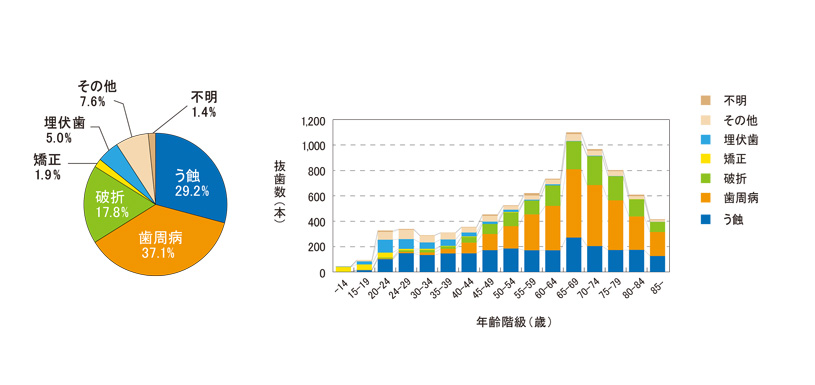
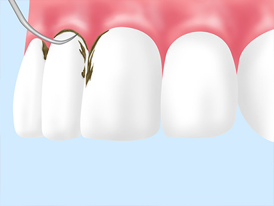
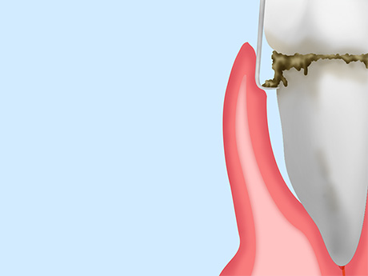
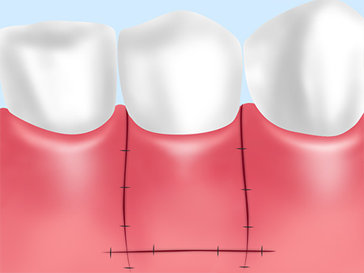

歯周病で歯を失わないために
歯周病は悪化すれば歯が抜け落ちてしまうこともあるこわい病気であり、早めの治療が大切です。また近年の研究により、歯周病は全身に悪影響を及ぼすこともわかっています。「歯周病かも」と思う症状があれば、できるだけ早く町田市の歯医者「ワイズデンタルオフィス」までご相談ください。

歯周病とは
歯周病のサイン
「歯ぐきが腫れている」「ブラッシングをすると血が出る」「歯がグラグラする」といった症状は、歯周病のサインの一つです。放っておくと静かに進行し、徐々に歯を支える顎の骨や歯ぐきを溶かしてしまいます。

図: 抜歯の主原因（全体）と抜歯の主原因別にみた抜歯数（年齢階級別、実数）
厚生労働省HPより引用（https://www.e-healthnet.mhlw.go.jp/information/teeth/h-04-002.html）
こちらは、厚生労働省が公表している「抜歯の原因」と「原因別の抜歯数」についてのデータです。これを見ると、日本の成人の多くの方が歯周病にかかっており、また歯を失う原因の第一はむし歯ではなく歯周病であることがわかります。
上に挙げたサインに思い当たるものがある方は、歯周病にかかっている可能性があります。「歯周病」と一口に言っても進行度はさまざまですので、とにかく早めの対応が肝心です。大切なご自身の歯を失ってしまうことのないよう、当院では歯周病の本質を正しく理解していただけるようお伝えするとともに、歯周病治療に力を入れています。
歯周病と全身の健康について
歯周病は悪化すると、歯を失うことにつながります。またそれだけでなく、全身の健康にも多くの影響を与えていることがわかっています。お口と体の健康のために、歯周病としっかり向き合いましょう。
歯周病と心臓病
アメリカで行われた研究では、歯周病の原因菌が心臓の血管を詰まらせ、細胞に障害を及ぼすことが明らかになりました。動脈硬化症や大動脈瘤にかかった方の細胞を検査すると、多くの歯周病関連菌が検出されます。このように、歯周病と心臓病には深い関わりがあるのです。
歯周病と糖尿病
糖尿病患者の方は高血糖になりやすく、毛細血管がもろくなります。そのためお口のケアが不十分であると、糖尿病でない患者の方よりも歯肉炎になりやすく、さらに放置すると重度の歯周病になる確率が高いと報告されています。
歯周病と肺炎
厚生労働省が発表した高齢者（65歳以上）の死亡原因の第1位は、肺炎です。中でも、お口の中の細菌が、誤嚥（ごえん：誤って飲み込むこと）によって肺に入り込むことで起こる誤嚥性肺炎が多いことがわかっています。
誤嚥性肺炎を起こした患者様の肺からは歯周病菌が多く見つかっており、歯周病と肺炎が強く関係しているとされています。
歯周病と早産
歯周病が進行して歯ぐきの炎症が強くなると、歯周組織には陣痛促進剤として使用される「プロスタグランディンE2」が増殖します。そのため、妊娠中に歯周病にかかると、早産の確率が高まってしまうのです。
早産であった方のお口の中を調べると重度の歯周病である割合が多かったというデータもあることから、歯周病と早産の関連性が認められています。
歯周病と血栓性疾患（バージャー病）
「バージャー病」とは、手足の末端の血管が詰まり、炎症を招いて皮膚に痛みや潰瘍を起こす病気です。バージャー病患者の方に対して行ったある調査では、すべての方が歯周病であり、さらに中度～重度と診断されたといったデータもあります。
また症状が現れている箇所の血管からは歯周病菌が検出されたのに対し、正常な箇所からは検出されませんでした。歯周病菌は血栓をつくりやすく、さらに皮膚の内側の細胞に侵入するという報告もあります。
当院が行う歯周病治療について
歯周病の進行度と治療法
| 初期（軽度） | |
|---|---|
|  | 歯ぐきが赤く腫れ、ブラッシングすると出血することがある段階です。 スケーラーという器具を使って、歯の表面や根元にこびり付いたプラーク（歯垢）・歯石を取り除く「スケーリング」を行います。 |
| 中期（中度） | |
|  | 歯ぐきの炎症が進んで出血も増え、歯を指で押すとグラグラします。顎の骨や歯ぐきは破壊されていき、歯周ポケット（歯と歯ぐきの間の溝）も深くなります。 「スケーリング」に加え、麻酔をした上で、歯周ポケットの中の歯石や感染した歯肉組織を取り除く「ルートプレーニング」を行います。 |
| 末期（重度） | |
|  | 顎の骨や歯ぐきの破壊が進み、歯周ポケットがかなり深くなります。歯は大きくグラグラし、放置すると抜け落ちてしまう可能性もあります。 麻酔をした上で歯ぐきを切開し、歯根を露出させた状態で、プラークや歯石、感染した歯肉組織を除去する「フラップオペ」を行います。最後に歯ぐきを縫合します。 |
光による歯周病治療 ～ペリオウェイブ～
従来から歯周病治療は、抗生物質を用いた治療が行われてきました。しかしこの治療法には、耐性菌が生まれるなどの問題が生じます。そこで、光による新しい治療法「ペリオウェイブ」が開発されました。
ペリオウェイブは、レーザー光を患部に照射することで歯周病菌を除菌する治療法であり、副作のリスクがありません。患者様のご負担を減らした歯周病治療が可能になります。
症例紹介
○○の症例
 |
|
テキストが入ります。テキストが入ります。テキストが入ります。テキストが入ります。テキストが入ります。テキストが入ります。テキストが入ります。テキストが入ります。テキストが入ります。テキストが入ります。テキストが入ります。
| 治療における注意点・リスク | |
|---|---|
| 治療期間 | |
| 治療費用 |
○○の症例
|
|
テキストが入ります。テキストが入ります。テキストが入ります。テキストが入ります。テキストが入ります。テキストが入ります。テキストが入ります。テキストが入ります。テキストが入ります。テキストが入ります。テキストが入ります。
| 治療における注意点・リスク | |
|---|---|
| 治療期間 | |
| 治療費用 |
歯周病治療Q&A
ブラッシングをすると血が出ます。歯周病でしょうか？
出血が続く場合には、歯周病で歯肉に炎症が起きていると考えられます。出血が一時的でなければ、お早めにご相談ください。
歯周病はブラッシングで治りますか？
正しいブラッシングは歯周病予防につながりますが、すでに歯周病になってしまっている場合、ブラッシングで治すことはできません。またブラッシングしているのに歯周病になったという場合、きれいにみがけていないことが考えられます。まずは一度ご相談ください。
塗り薬や飲み薬で歯周病を治せますか？
歯周病菌はプラークに潜んでおり、バイオフィルムという強い膜を張って身を守っているため、薬を塗っただけでは除去できません。また飲み薬で菌を減らすことは可能ですが、ほかの治療と併用することが必要です。まずは一度ご相談ください。
歯石を取ってもらうには、どのくらいの間隔で歯科医院に行けばいいですか？
一般的に、年に3～4回程度来院していただくといいでしょう。しかし歯石の付きやすさやブラッシングの程度には個人差がありますので、具体的な頻度は一人ひとり異なります。どうぞ一度ご相談ください。
「重度の歯周病で抜歯が必要」と診断されたのですが、抜きたくありません。どうすればいいですか？
歯周病が重度まで悪化して保存が難しくなった歯は、無理に歯を残すことでまわりの歯まで歯周病にして悪化させてしまったり、後の入れ歯治療などにも悪影響を及ぼしたりします。また痛みや腫れが出る原因にもなりますので、どうしてもあきらめざるを得ない場合もあります。
しかし、重度の歯周病に対してできる治療もあります。当院では患者様の歯をできるかぎり残せるよう重度の歯周病にも対応しています。ぜひ一度ご相談ください。
再生治療で、歯ぐきや骨をどれくらい再生できますか？
再生治療を行えば、組織は再生します。しかし再生の程度は、患者様の年齢や体力、ブラッシング習慣、免疫力といった要素によって大きく異なるといえます。通常、再生治療が適用できるケースは中度の歯周病となっていますので、一度ご相談ください。
歯周病治療の流れと費用について
むし歯・歯周病にならないために「予防歯科・定期検診」